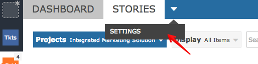
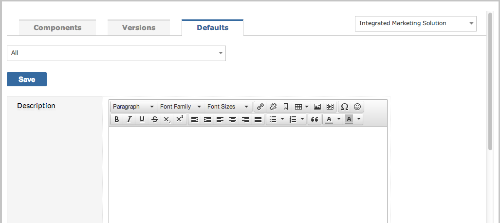
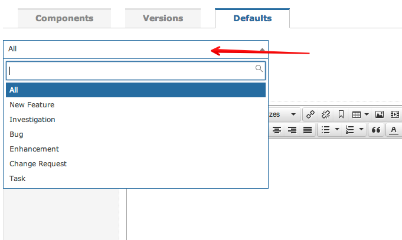
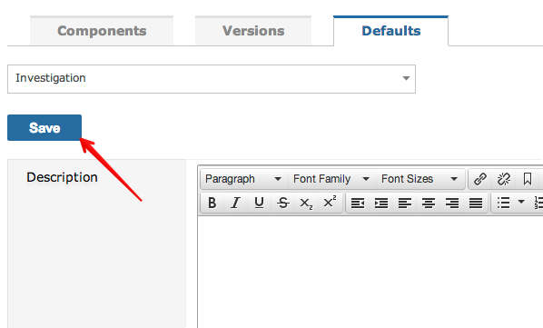

To simplify data entry and improve data accuracy it is often advisable to set default data capture values for your projects.
Project Defaults are determined by the Processes that have been defined in the Project Template that your projects are created from and the fields on the Screens that they are set to use. If, for example, you have a project from a Template that uses the out-of-the-box field Status and a Custom Field Browser Version then you will be able to set defaults for both fields because Gemini treats Custom Fields as if they were part of the core application.At the same time, if you have two processes, Bug and Task and Bug uses Browser Version but Task does not, then you will be able to set the default value for Browser Version just for processes of type Bug.
To setup Project Defaults,navigate to the project for which you wish to create values and select Settings from the project menu. You will then see the following options just below the menu bar.

Click on Defaults.

You will be prompted to set defaults for all processes in your projects, or for a specific process. Setting defaults for a specific process will always override the settings for all processes.

You will see every field from a superset of fields representing data capture screens from all of the possible processes in your project.
To create Project Defaults simply choose whether the default relates to "All" or a specific process, enter/select the values that you wish to act as defaults, and click Save.

NoteThe project Settings menu can only be accessed by user groups who have the "Can Set Project Default Values" permission.